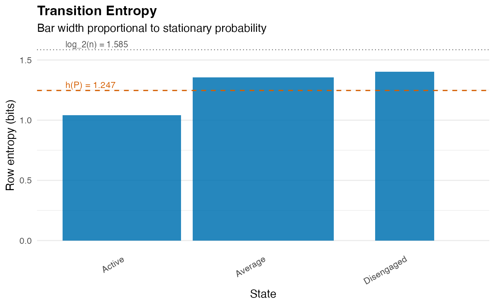

transition_entropy() measures how uncertain a Markov chain's next step
is, at three levels: the branching entropy of each state (how evenly its
outgoing transitions spread), the entropy of the stationary distribution,
and the chain's entropy rate, the average uncertainty per step. It takes a
transition network, a tna model, a transition matrix or wide sequence
data; a netobject_group gives one result per group. The entropy rate
$$h(P) = -\sum_i \pi_i \sum_j P_{ij} \log_b P_{ij},$$
with \(\pi\) the stationary distribution, is the per-step uncertainty of
the chain's trajectories (Cover & Thomas, 2006, ch. 4). It was introduced
to behavioural research as gaze transition entropy by Krejtz et al. (2015)
and tracked in real time as mobile transition matrix entropy by Krejtz et
al. (2025). The normalised values divide by \(\log_b n\), the entropy of
uniform branching among \(n\) states; they are the scale-free variants
those papers report.
An entropy rate near 0 means the current state almost fixes the next one;
near the ceiling \(\log_b n\) (normalised 1), every next state is about
equally likely. The redundancy \(H(\pi) - h(P)\) is the uncertainty that
knowing the current state removes, zero when successive states are
independent. All of these are point estimates from one transition matrix:
entropy_bayes() gives their credible intervals, entropy_network()
shows which transitions carry the entropy, and entropy_trajectory() how
it changes over time. A chain with more than one closed class has more
than one stationary distribution; check its classes with
chain_structure().
Usage
transition_entropy(x, base = 2, normalize = TRUE)
# S3 method for class 'net_transition_entropy'
print(x, digits = 3, ...)
# S3 method for class 'net_transition_entropy_group'
print(x, ...)
# S3 method for class 'net_transition_entropy_group'
summary(object, ...)
# S3 method for class 'net_transition_entropy_group'
plot(x, title = "Transition Entropy", fill = "#0072B2", ...)
# S3 method for class 'net_transition_entropy'
summary(object, ...)
# S3 method for class 'summary.net_transition_entropy'
print(x, digits = 3, ...)
# S3 method for class 'net_transition_entropy'
plot(x, title = "Transition Entropy", fill = "#0072B2", ...)Arguments
- x
The chain: a
netobjectorcograph_networkwith non-negative transition weights, atnamodel, a numeric transition matrix, or wide sequence data (a data frame or a character matrix, one row per sequence) that holds a numbered run of positions (T1, T2, ...), from which a relative transition network is built; other columns are set aside with a message. For a frame without such a run, build the network withbuild_network()(state_cols =oraction =) and pass that. Anetobject_groupgives one result per group. An association network (cor,pcor,glasso,ising,mgm) or a matrix with negative entries raises an error of classnestimate_not_markov. For theprint()andplot()methods: atransition_entropy()result;print()also takes a group result or the result ofsummary().- base
The logarithm base, which sets the unit:
2(default) for bits,exp(1)for nats,10for hartleys. Any positive number other than 1.- normalize
Whether rows that do not sum to 1 (a frequency network, a count matrix) are divided by their sums, with a warning. With
FALSE, such rows raise an error. DefaultTRUE. A state with no outgoing transitions (a row summing to zero) is an error either way.- digits
For the
print()methods of a result and of its summary: decimal places of the values. Default3. A result's normalised values always print with three decimals, the summary's percentages with one.- ...
- object
For
summary(): atransition_entropy()result.- title
For
plot(): the plot title. Default"Transition Entropy".- fill
For
plot(): the bar fill colour. Default"#0072B2", the Okabe-Ito blue.
Value
A net_transition_entropy object, or for a netobject_group a
net_transition_entropy_group: a named list of them, one per group.
print() shows the entropy rate, stationary entropy and redundancy, raw
and normalised, and for a group the entropy rate of each group. For a
group, summary() returns a data frame with one row per group (group,
n_states, the raw and normalised entropy rate and stationary entropy,
redundancy and unit), and plot() draws the bar chart below in one
panel per group.
summary() returns a summary.net_transition_entropy object, printed by
its own print() method, that holds table, one row per state
(stationary probability, raw and normalised branching entropy, the
state's additive contribution \(\pi_i H(P_{i\cdot})\) to the entropy
rate and that contribution as a percentage of it), sorted by contribution,
largest first; chain, one row per chain-level quantity (entropy rate,
stationary entropy, redundancy and the ceiling, raw and normalised),
with the unit; and the logarithm base.
plot() returns a ggplot bar chart of each state's branching entropy,
with bar widths proportional to the stationary probability (so a bar's
area is proportional to the state's contribution), a dashed line at the
entropy rate \(h(P)\) and a dotted line at the ceiling \(\log_b n\)
(uniform branching). The print() methods return their input
invisibly. The object's fields:
- row_entropy
Named numeric vector of length \(n\): each state's branching entropy \(H(P_{i\cdot}) = -\sum_j P_{ij} \log_b P_{ij}\).
- row_entropy_norm
row_entropydivided by the ceiling \(\log_b n\), in \([0, 1]\); all zeros when \(n = 1\).- stationary
Named numeric vector: the stationary distribution \(\pi\).
- stationary_entropy
\(H(\pi) = -\sum_i \pi_i \log_b \pi_i\), the entropy of \(\pi\) read as an independent draw each step; an upper bound on the entropy rate.
- stationary_entropy_norm
stationary_entropydivided by the ceiling \(\log_b n\).- entropy_rate
\(h(P) = \sum_i \pi_i H(P_{i\cdot})\), the Shannon-McMillan-Breiman entropy rate.
- entropy_rate_norm
entropy_ratedivided by the ceiling \(\log_b n\).- redundancy
\(H(\pi) - h(P)\), the entropy deficit due to serial dependence; zero for an independent chain (every row of \(P\) equal to \(\pi\)).
- redundancy_norm
The relative redundancy \((H(\pi) - h(P)) / H(\pi)\), the share of the stationary entropy that order-1 memory removes; not
redundancydivided by \(\log_b n\).0when \(H(\pi) = 0\).- max_entropy
The normalising ceiling \(\log_b n\).
- base
The logarithm base used.
- states
Character vector of state names.
Details
The convention \(0 \log 0 = 0\) applies, so an absorbing or deterministic row has zero branching entropy. The chain need not be irreducible: \(\pi\) is the eigenvector of \(P^\top\) for the eigenvalue closest to 1, as elsewhere in the package. For a chain with more than one closed class this is one stationary distribution among many; when some of its probabilities are zero, a warning says so, and they are set to machine epsilon and the distribution renormalised before the entropies are computed.
\(h(P) \le H(\pi)\) holds, with equality if and only if successive
states are independent. The deficit \(H(\pi) - h(P)\) is reported as
redundancy, a measure of how much memory the chain has at order 1.
References
Cover, T.M. & Thomas, J.A. (2006). Elements of Information Theory, 2nd ed., chapter 4. Wiley.
Krejtz, K., Duchowski, A., Szmidt, T., Krejtz, I., Gonzalez Perilli, F., Pires, A., Vilaro, A., & Villalobos, N. (2015). Gaze transition entropy. ACM Transactions on Applied Perception, 13(1), 4:1-4:20. doi:10.1145/2834121
Krejtz, K., Hughes, C.J., Stasiak, I., Duchowski, A., & Krejtz, I. (2025). Real-time mobile transition matrix entropy based on eye and head movements. Proceedings of ETRA '25. doi:10.1145/3715669.3723128
Shannon, C.E. (1948). A mathematical theory of communication. Bell System Technical Journal, 27, 379-423.
See also
entropy_network for the edge-level decomposition,
entropy_trajectory for the sliding-window version,
entropy_bayes for credible intervals;
markov_stability, passage_time,
markov_order_test, chain_structure
Examples
net <- build_network(as.data.frame(trajectories), method = "relative")
te <- transition_entropy(net)
print(te)
#> Transition Entropy (3 states, bits; ceiling = 1.585)
#>
#> raw normalised
#> Entropy rate h(P) = 1.247 bits 0.787
#> Stationary H(pi) = 1.501 bits 0.947
#> Redundancy H(pi)-h = 0.255 bits 0.170
#>
#> Normalised: h(P) and H(pi) are raw / log_2(n_states) (0 = deterministic, 1 = uniform);
#> redundancy is the relative redundancy (H(pi) - h(P)) / H(pi), not raw / log_2(n_states).
summary(te)
#> Transition Entropy Summary (bits)
#>
#> Per-state contribution to h(P):
#> state stationary row_entropy row_entropy_norm contribution
#> Average 0.443 1.354 0.855 0.600
#> Active 0.372 1.040 0.656 0.387
#> Disengaged 0.185 1.403 0.885 0.260
#> contribution_pct
#> 48.1
#> 31.0
#> 20.8
#>
#> Chain-level summary:
#> quantity raw normalised
#> entropy_rate h(P) 1.247 0.787
#> stationary H(pi) 1.501 0.947
#> redundancy H(pi)-h(P) 0.255 0.170
#> ceiling log_2(n) 1.585 1.000
#>
#> Normalised: row entropy, h(P) and H(pi) are raw / log_2(n_states), in [0, 1];
#> redundancy is the relative redundancy (H(pi) - h(P)) / H(pi).
plot(te)
